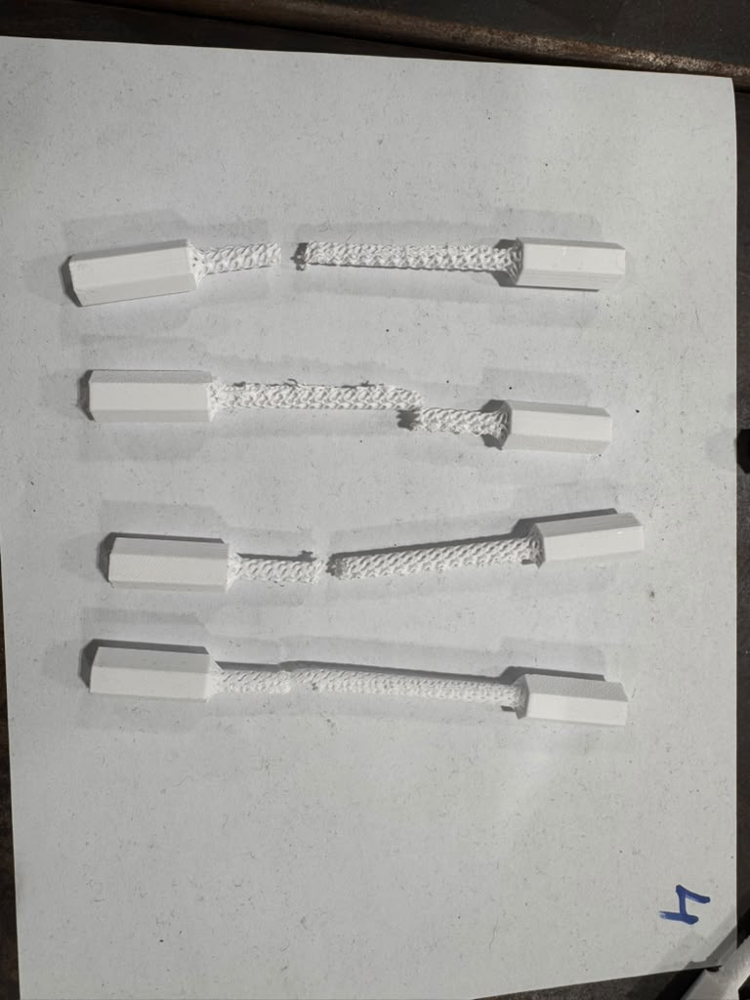

FEATURED / EXPERIMENTAL MECHANICSCASE STUDY 01
Understanding the torsional response of TPMS lattice structures
Compared lattice geometries through experimental torsion results, studying how unit-cell size and wall thickness affect shear stress–strain response, shear modulus and maximum shear stress.
TPMS LatticesMechanical TestingStress–StrainExperimental Data
View full case study ↗